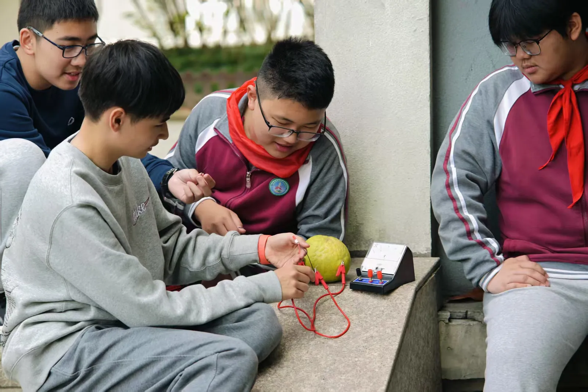
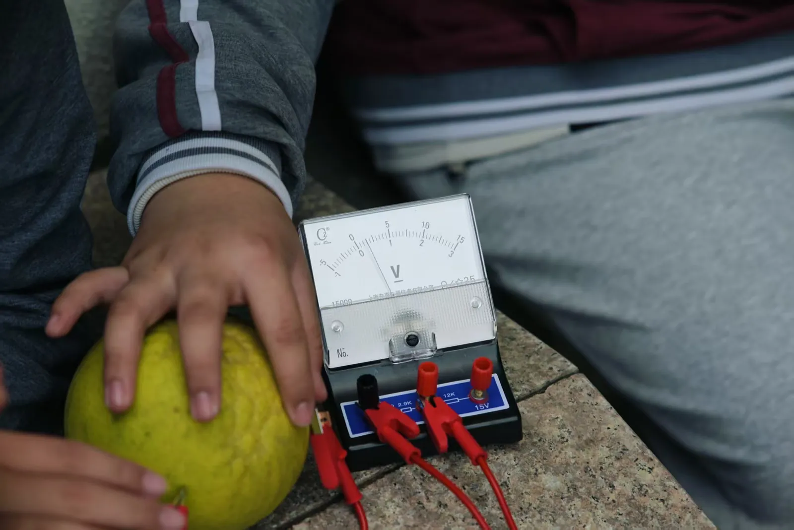
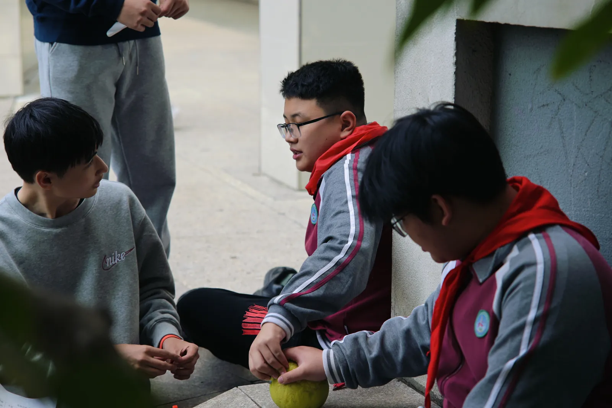

FRUIT BATTERY 水果电池
水果电池
一只柚子、两片金属，
把看不见的化学能，
变成指针的一次轻颤。
- 0.42V第一只柚子电池
- 5种水果对照实验
水果里，真的藏着电吗？
THE QUESTION
“把两根不同的金属片
—— 我们的第一次读数，2026.11.16
插进同一只柚子，
再把它们接到电压表上——
指针动了。”
水果的汁液里溶着果酸、柠檬酸。它们溶进水里，会“拆”成带电的离子，所以果汁和淡盐水一样，能够导电。
当两种活泼性不同的金属同时浸在果汁里，一块金属交出电子，电子沿导线跑向另一块金属。外电路里有了电流——水果，就成了一节小小的电池。
这个装置有一个正式的名字：原电池。水果电池，是它最朴素的样子。
化学能→电能水果电池完成的一次能量转换
三个电压，做个参照
- 1.5V一节干电池
- 3.8V手机锂电池
- 0.42V我们的柚子电池
两种金属，一场电子的迁徙
HOW IT WORKS
-
果汁会导电
果酸溶于水，产生可以自由移动的离子。离子能移动，电路才有“路”可走。
-
活泼性不同，才有电压
锌比铜活泼，更容易失去电子，成为负极；铜成为正极。两种金属的“脾气”不同，才有电势差。
-
电子过桥，化学能变成电能
电子从锌片经导线流向铜片，电压表的指针偏转——这就是电流存在的证据。
动手：把水果变成电池
MAKE IT
-
插电极
铜片、锌片相隔 1–2 cm 插入果肉，两片金属不要碰在一起。
-
接电表
铜片接电压表的“＋”，锌片接“－”，量程选 3 V。接反了指针会反向偏转。
-
读数、换变量
记录读数，再换水果、换电极、多串几节，看看数字怎么变。
实验清单
- 柚子 / 柠檬 / 苹果
- 铜片 / 锌片
- 导线 / 电压表 / 发光二极管
- 记录表



测一测：换一个变量，电压会怎样？
COMPARE
实验台 EXPERIMENT DESK
0.42 V × 1 节 ≈ 0.42 V
读数为按实验规律简化的估算值，用来比较变量，不等于真实测量。
1 节柚子电池，铜片 ＋ / 锌片 －，电压约 0.42 V。
水果电池的电压很小，但足够让指针轻轻偏转。
单节电压对照
铜片—锌片 · 3 V 档 · 课堂实测均值
我们的结论
水果电池不是魔法，
而是一次看得见的能量转换。
它做到了把化学能变成电能，让电压表有了读数，也让“电路”第一次变得具体。
它做不到电压不足 1 V、电流很小，带不动小灯泡，更不可能替代真正的电池。
但它和手机里的锂电池、汽车里的蓄电池，遵循同一个思路：用化学反应搬运电荷。